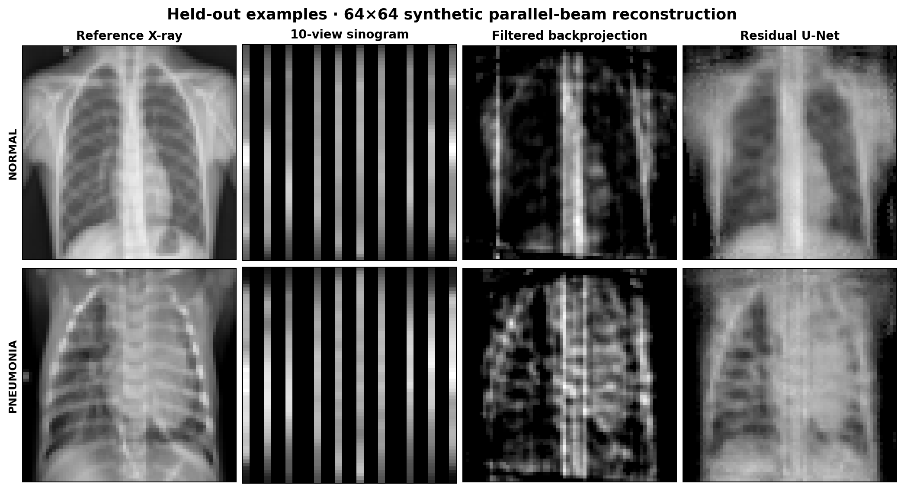

01 · Forward model
Generate a 30-angle synthetic sinogram, then keep a sparse subset of projection views.
A physics-informed residual U-Net refines filtered backprojection from sparse simulated views. Explore the workflow, view held-out results, and download the complete source and report.
These held-out examples compare the original reference X-rays with simulated sparse sinograms, filtered backprojection, and the trained model output.

To run the interactive upload demo: install the project requirements and run streamlit run app.py.
Each chest radiograph is treated as a 2D reference image. A differentiable parallel-beam Radon operator simulates projections; sparse angles are retained and reconstructed. The network learns a residual correction while using image and measured-projection losses.
Generate a 30-angle synthetic sinogram, then keep a sparse subset of projection views.
Apply ramp-filtered backprojection to form an initial image estimate from the sparse measurements.
A residual U-Net refines the FBP image with projection consistency and image-space supervision.
Mean PSNR and SSIM over the 624-image test split. More views improved both the baseline and learned result in this experiment.
| Views | FBP PSNR | FBP SSIM | Model PSNR | Model SSIM |
|---|---|---|---|---|
| 4 | 8.53 dB | 0.217 | 17.02 dB | 0.527 |
| 5 | 8.77 dB | 0.234 | 18.30 dB | 0.579 |
| 10 | 10.40 dB | 0.342 | 22.51 dB | 0.780 |
In this matched run, scores improved through 15 epochs and dipped slightly at 20. Longer training can help while learning continues, but can also plateau or overfit. The final checkpoint was selected by validation loss at epoch 17.
| Epochs | Validation L1 | Test PSNR | Test SSIM |
|---|---|---|---|
| 5 | 0.06246 | 21.11 dB | 0.713 |
| 10 | 0.05537 | 21.92 dB | 0.751 |
| 15 | 0.05731 | 22.24 dB | 0.780 |
| 20 | 0.05620 | 21.97 dB | 0.777 |
Source code, selected trained weights, epoch checkpoints, evaluation metrics, and image results.
Formal report, references, methodology, ablations, limitations, and project slides.
Install dependencies, place the dataset in the expected folder, then launch the interactive demo or training script.